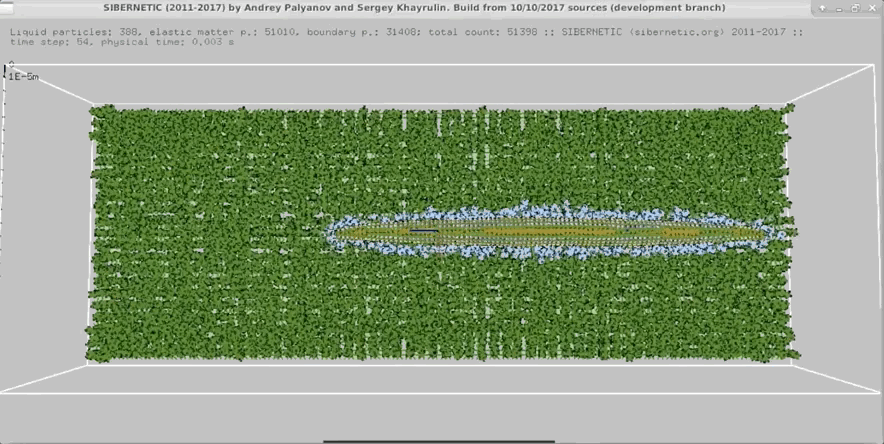

Look at this worm

What is it?
OpenWorm aims to build the first comprehensive computational model of the Caenorhabditis elegans (C. elegans), a microscopic roundworm. With less than a thousand cells, it solves basic problems such as feeding, mate-finding and predator avoidance. Despite being extremely well studied in biology, this organism still eludes a deep, principled understanding of its biology.
Why?
Because modeling a simple nervous system is a first step toward fully understanding complex systems like the human brain. Modelling of organisms also helps understand their interactions with each other and the environment.
Weird idea
If all of this worm's cells are being simulated, and it is acting to self replicate and proliferate in the simulated environment, is it not then alive?